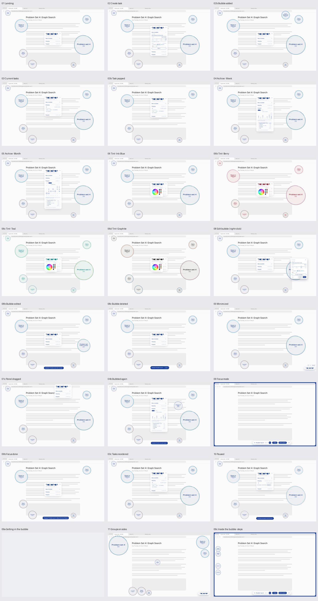
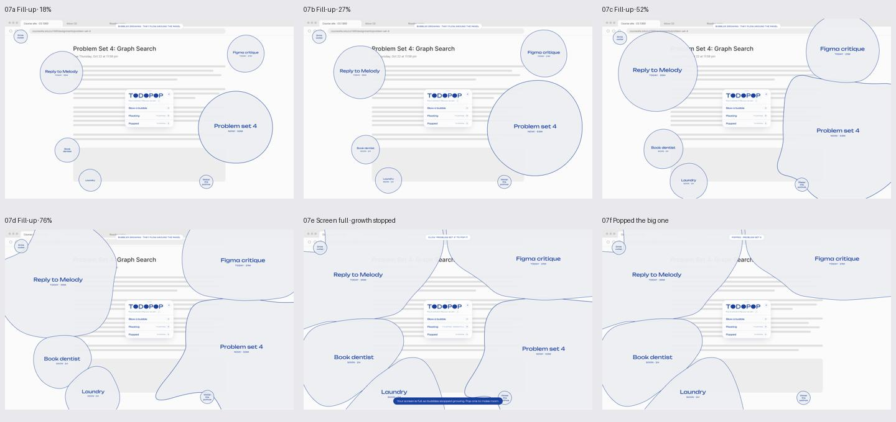

TODOPOP：Figma 完整实现差距与开发步骤
后续规则已更新：以 当前产品规则 为准。Step 与 Focus 计时条已移出范围，保留自动 URL Focus；点击按有无链接区分。本文其余审查内容保留为原设计与代码基线的对照。
审查日期：2026-10-23（America/New_York）
代码基线：c9804cf，沿用现有 Electron + React + TypeScript + Chrome Extension 实现。
设计来源：TODOPOP prototype · 11:2。
范围确认：用户明确要求「手机端先不做」。本轮只规划桌面端；手机设计只作审查记录，不进入开发步骤、工期或验收。
本文是审查与后续开发方案，不代表下面列出的缺失功能已经实现。
1. 结论
现有工程可以继续作为桌面完整版的基础，不需要推倒重写。任务管理、原生透明窗口、拖动、本地保存、Chrome 上下文识别和认证通信都已经存在。
但当前版本仍然是原 technical plan 范围内的 MVP，不能视为完整复现了这份 Figma。主要差距集中在：
- 气泡随时间增长、彼此挤让、绕开面板、屏幕满后停止增长。
- 全局暂停增长，以及暂停、专注、休眠、离线之间的时间规则。
- 完整专注体验：入场动画、隐藏面板、屏幕边框、计时条、完成/退出和步骤气泡。
- 自定义分组、主题色、分组颜色与侧边位置、Shuffle / Line up、任务排序。
- 周/月归档、真实历史统计、专注时长、再次生成任务时保留历史。
- 最小化 Launcher、设计中的快捷键、独立编辑浮层、成功提示与删除撤销。
手机 Remote 已查看，但按本次范围确认暂不实现。
技术可行不等于当前已经符合。 桌面部分大多能在现有技术栈上补齐；复杂气泡布局需要新增引擎和性能验证。当前不需要为了桌面完整版引入账号、云端服务或手机同步。原计划排除的完整统计，如今出现在桌面归档设计中，应按本次桌面范围补齐；手机继续排除。
2. 本次看了哪些内容
本次读取了两个页面：brainstorm（0:1）和 TODOPOP prototype（11:2），检查画布结构、说明文字、隐藏图层、透明度和原型 reactions，并查看了 43 个 frame 的截图。
| 设计区域 | 审查范围 | 如何理解 |
|---|---|---|
| App screens | 24 个桌面画面 | 核心业务与桌面交互 |
| Fill-up flow | 6 个画面，18% → 27% → 52% → 76% → Screen full → Pop | 增长、占屏与恢复空间的演示 |
| Phone remote（暂缓） | 已查看 3 个 390 × 844 画面 | 仅保留审查记录；按用户要求不纳入实现 |
| Components | 组件库及 2 个示例 frame | Bubble、Urgency、Logo、Accordion、Task row、Edit、Launcher、Focus bar、Group color picker 等 |
| Type specimens | 4 个字体方案 | 设计比较稿，不应默认全部实现成可切换主题 |
| Caption type options | 4 个 caption 方案 | 同样需要先选定生产版本 |
| brainstorm | 草图与基本字段 | 补充背景；没有读取到正式 flow 起点 |
Prototype 页有两个正式 flow 起点：TODOPOP（14:3）与 Fill-up demo（68:4066）。Phone remote 有画面，但未读取到独立 flow 起点，部分连线仍指向桌面 frame。
截图与图层要结合判断：例如 Focus mode 中普通气泡和 Panel 的 visible=true，但 opacity=0，实际应隐藏；不能因为图层仍存在就把它当成可见内容。审查期间也观察到部分组件文字更新，因此本文以本次读取的画面为准，落地前仍应冻结一个设计版本。
3. 当前符合与不符合的地方
状态含义：已具备指核心能力存在；部分符合指已有类似功能但语义、外观或覆盖范围不足；缺失指没有对应实现；需决策指设计与现有方案有冲突或缺少规则。
| 编号 | Figma 要求 | 当前情况 | 判断与下一步 |
|---|---|---|---|
| F01 | Landing、三个折叠区、任务计数 | Landing.tsx 已实现 |
部分符合：保留结构；对齐最终尺寸、颜色、浮层和反馈。设计样例中的固定计数不能直接照抄。 |
| F02 | 创建任务、四级 urgency、选择 group | TaskForm.tsx、UrgencyPicker.tsx 已实现 |
部分符合：缺 + New / Edit groups；已有 URL 输入是技术方案补充，需确定在最终设计中的位置。 |
| F03 | 独立、透明、置顶、可拖动的气泡 | BubbleWindows 已实现，位置本地保存 |
已具备基础能力：复杂布局、巨大气泡与多显示器仍需扩展和实测。 |
| F04 | 四种基础大小 | 窗口大小 118 / 192 / 298 / 446 | 已具备初始尺寸，并非随时间增长。窗口尺寸还包含透明留白，不等于可见气泡直径。 |
| F05 | Idle A/B、Hover、Pop、Gone 状态 | 已有慢浮动、弹性缩放、完成爆裂 | 部分符合：当前没有按每个 variant 精确还原轮廓与时序；缺暂停虚线和专注过渡。 |
| F06 | 放着不做会变大，显示等待时间/直径 | 仅按 urgency 选择固定尺寸与素材 | 缺失：新增增长时钟、尺寸函数、计时元数据和持久化。 |
| F07 | 气泡相互挤让、绕开 Panel | 位置由索引公式产生或手动拖动 | 缺失：新增共享布局/碰撞计算；不是加一个 CSS scale 就能完成。 |
| F08 | Screen full 时停止增长，Pop 后腾出空间 | 无占用率或容量状态 | 缺失：定义“满”的判据与恢复机制。 |
| F09 | 30 min / 1 hour / Till tomorrow / Until I resume 暂停增长 | 现有 snooze 隐藏单任务 10 分钟 | 不符合设计语义：全局暂停时气泡应留在屏幕上、停止增长并显示暂停状态；snooze 可保留为独立能力。 |
| F10 | 点击气泡 Pop；进入专注有单独入口 | 当前普通点击打开 URL，✓ 完成 | 需决策：与原 technical plan 的 click-to-open 冲突。先确认最终映射，再统一鼠标、键盘和文案。 |
| F11 | 右键/点击任务名编辑，Save / Cancel / Delete | 功能已存在 | 部分符合：现在编辑区接在主面板下面；设计是靠近气泡的独立 popover。 |
| F12 | 更新/删除/完成/再次生成的 toast；Delete 可 Undo | 只有状态更新，删除直接过滤任务 | 缺失：增加通知和可撤销删除，不能用“恢复已完成任务”代替 Undo delete。 |
| F13 | 列表 grip 拖动排序，方向键也能排序 | grip 是图片，实际按 urgency 排序 | 缺失：增加持久化 rank、拖动与键盘操作，取消每次渲染强制 urgency 排序。 |
| F14 | Arrange：Shuffle、Line up 四个方向 | 没有对应命令或控件 | 缺失：接入布局引擎，保证不覆盖面板/Launcher，不破坏分组约束。 |
| F15 | 最小化后右下角 Launcher、⌘⇧Space | 关闭面板后靠 Dock/菜单恢复 | 部分符合：没有 Launcher；现有 CmdOrCtrl+Shift+T 是菜单 accelerator，不是设计中的全局快捷键。 |
| F16 | Panel 可拖动 | 标题区域有原生 drag region | 已具备拖动基础：没有保存主面板位置，也没有把它作为布局避让区。 |
| F17 | 自动识别工作上下文 | Chrome 扩展、URL matcher、localhost WebSocket 已实现 | 已具备：限 Chrome、有效配对和匹配 URL；这部分可直接复用。 |
| F18 | Get in the bubble 可主动进入完整专注体验 | 当前按钮只打开已有 URL | 部分符合：不是主动 session；无 URL 的任务也没有独立专注入口。 |
| F19 | 入场 skin 动画；隐藏普通气泡与 Panel | 当前只隐藏普通气泡 | 部分符合：面板仍在；缺入场动画、退出还原和独立窗口编排。 |
| F20 | Focus bar、计时、边框、Done / × | 当前主面板只有状态文字 | 缺失：新增 Focus session、Focus bar 与穿透边框；Done 完成、× 不完成。 |
| F21 | 专注期间其它气泡暂停增长；记录时长 | 当前没有增长和 session 记录 | 缺失：与增长时钟和历史事件一起实现，避免藏起来仍继续长大。 |
| F22 | + Step、步骤侧边切换、步骤气泡 | Task 没有 steps | 缺失：新增步骤数据、输入、完成状态、侧边布局与动画规则。 |
| F23 | 自定义 group、右键颜色选择器 | 固定 None / School / Work / Life | 部分符合：已有分组字段，但没有可编辑分组实体、增删改、菜单或颜色设置。 |
| F24 | 按 group 决定颜色、侧边位置；未分组自由漂浮 | 行内 dot 用 group 色；桌面 body 却按 urgency 选择固定彩色 SVG | 不符合颜色语义：urgency 应控制大小/增长，group 控制分组视觉和布局；两者需解耦。 |
| F25 | 6 个随 Tint 变化的组色；选中占用色会交换；自定义颜色保持 | 无 palette 或颜色来源信息 | 缺失：记录 palette slot / custom 来源，定义交换与变色规则。 |
| F26 | Ink Blue / Berry / Teal / Graphite、自定义 Tint；点击 Logo 的 O 打开 | 硬编码蓝色；Logo 的 O 是静态图片 | 缺失：增加设置、主题 token 与 picker；O 的 16% 弹性 hover 也尚未实现。 |
| F27 | Popped 的 Week / Month、日期导航、每日列表、统计 | 只有按 completedAt 排序的列表 | 部分符合：只满足基础归档；没有日历、周柱图、最佳日、专注时长和按日筛选。 |
| F28 | Re-bubble 保留过去完成记录 | restore 把原任务改为未完成并清除 completedAt | 部分符合且数据不够：新版必须先保留历史事件/任务轮次，否则历史统计会被恢复操作抹掉。 |
| F29 | Phone remote | 设计已查看，现有工程无跨设备层 | 暂缓，不计入本轮缺口验收：不增加手机应用、账号、云服务和离线同步。 |
| F30 | 面向普通用户直接下载安装 | 只有开发/本地构建命令 | 尚未交付：有 electron-builder 依赖，没有可分发安装包和完整发布配置。不是设计画面本身，但影响最终使用。 |
三个不能混为一谈的概念
- 暂停增长 ≠ 隐藏任务：Figma 的 Paused 仍显示带暂停样式的气泡；当前 snooze 会移除窗口。
- 自动 Focus 判定 ≠ 完整 Focus session：现有
NORMAL / FOCUS只决定普通气泡显隐，没有任务归属、计时、步骤和主动退出语义。 - 恢复一个任务 ≠ 重建完整历史：只存当前状态无法解释多次完成、再次生成、专注退出和删除撤销。
4. 哪些条件现在具备，哪些需要补齐
| 条件 | 现在是否具备 | 对完整实现的影响 |
|---|---|---|
| Electron 原生透明、置顶窗口与受限 IPC | 是 | 继续复用；新增 Launcher、Focus bar、popover、步骤窗口，不绕过现有权限检查。 |
| React、Motion、Zustand 与本地字体/素材 | 是 | 可承接 UI；需要统一 tokens 和参数化气泡几何，不能继续复制固定 SVG 颜色当主题系统。 |
| Chrome 当前页面、前后台和断线事件 | 是，需要加载扩展与配对 | 自动进入/离开工作上下文已有来源；非 Chrome、桌面任意应用内容识别不在当前能力范围。 |
| 本地任务可靠写入、损坏备份 | 是 | 能保存新版状态；必须扩展 schema 和迁移，不能只在 TypeScript 中加字段。当前 load 会逐字段重建，未接入的新字段会被丢掉。 |
| 任务时间与历史数据 | 只有 createdAt、completedAt | 不足以计算暂停后的有效增长时长、每次 Focus session、再次完成记录与周/月历史。 |
| 动态布局与软体形变引擎 | 否 | 满屏挤压是本项目技术风险最高的桌面部分，需要独立验证。 |
| 统一模式/可见性协调器 | 否 | 手动 Focus、自动 URL Focus、全局 Pause、单任务 Snooze 和 Screen full 需要协调，不能堆独立 boolean。 |
| 运行时任务云服务/用户账号 | 桌面版不需要 | 保留本地 JSON 与 localhost Chrome bridge 即可；手机同步已排除。 |
| 最终交互规则与视觉基准 | 不完全 | Figma 包含候选字体、过时组件描述、演示连线与实际功能冲突，先冻结决策再编码。 |
| 覆盖完整版的测试 | 否 | 已有测试只覆盖现有 MVP；不能据此承诺新增 flow 都可靠。 |
5. 开发前必须确认的规则
以下是建议，不是已经确认的产品需求。
| 决策 | 已读取的证据 / 当前冲突 | 建议如何落地 |
|---|---|---|
| D1：普通点击做什么？ | Bubble 描述与 Fill-up 的 07e→07f 是点击 Pop；原技术方案和当前代码是点击打开 URL。 | 如果目标是完整 Figma，普通点击 Pop，编辑层的 Get in the bubble 进入专注；若保留 click-to-open，需要同步修改 Figma、文案和验收标准。 |
| D2：手动 Focus 与自动 Focus 谁优先？ | Figma 有 Get in / ×；当前 URL 一匹配就自动 FOCUS。 | 区分 manual / automatic session。手动 × 退出后，在同一页面上不能下一秒又自动进入；可规定直到 URL/任务变化再允许自动重入。无 URL 任务也应允许手动 session。 |
| D3：操作 TODOPOP 自己是否会退出 Focus？ | + Step 输入、计时条操作可能使 Chrome 失去前台。 | 自己的短暂编辑窗口不应被当成“分心”；需有会话归属/短暂交互规则，不能直接照搬当前 chromeFocused=false 即退出。 |
| D4：增长如何计时？ | 文案有“约每 2 分钟长 1 cm”，Fill-up 连线却每 1.6 秒跳阶段。 | 1.6 秒是原型演示节奏，不是正式增长速度。确认四级曲线、暂停是否补算、睡眠/退出期间是否增长、改 urgency / Re-bubble 是否重置。 |
| D5：“cm”和满屏如何定义？ | 列表有直径 cm，画面有 18/27/52/76% 和 Screen full，但无完整算法。 | 用明确的逻辑像素/布局单位计算；如必须显示物理 cm，需另做显示器校准。满屏按扣除保护区后的可用空间/可行布局定义，避免把重叠面积重复计数。 |
| D6：暂停、Snooze、Screen full 的恢复 | Figma 有全局四档暂停；代码只有单任务 10 分钟隐藏。 | 作为不同动作。全局暂停保持可见；Resume 结束暂停，不清掉 Focus；Screen full 腾出空间后是否立即继续增长需明确。 |
| D7：步骤完成与侧边运动 | 已有 + Step、Step side、四个步骤和“沿左侧各自保持高度平移”的说明，缺完整增删改/完成连线。 | 先定义 steps CRUD、排序、完成后行为、父任务完成是否自动完成子步骤、切边的锚点与不重叠约束。 |
| D8：Re-bubble 是恢复还是新一轮？ | Figma 的历史与 Again 同时存在；代码清除原 completedAt。 | 推荐保留完成事件，生成新任务轮次或新的任务 ID，记录 sourceTaskId；不能擦除过去统计。 |
| D9：主题、组色与组名 | 预设有 School / Work / Life，侧边示例又有 School / Jobs / Chores；组色说明提到占用色交换。 | 组名是可编辑数据，使用稳定 groupId。明确 tint→palette 映射、默认 slot、占用色交换及 custom 色保持规则。 |
| D10：颜色与字体以哪个稿为准？ | Logo 描述写 Comfortaa Bold，但实际文字节点为 Unbounded Regular；自定义色描述仍提 hue-only，当前画面已出现 Saturation 条；字体区有 8 份比较稿。 | 以冻结后的实际节点/画面为视觉基准，更新过时描述；不要把所有候选稿做成用户设置。确认自定义 Tint 与组色的 hue/saturation 取值边界。 |
| D11：手机范围 | 用户已明确「手机端先不做」。 | 本轮已决定排除，无需为此阻塞桌面开发；以后重新立项时再定义同步架构。 |
补充：部分样例画面在任务删除/完成后仍保留旧计数，历史也标有 sample history。实现必须根据真实数据派生计数和统计，不能把这些数字视为业务规则。09a Getting in the bubble 的独立截图近乎空白，但其图层和 0.05 秒后跳转仍存在，应作为过渡帧结合前后状态验证，而非实现一个空白屏。
6. 沿用当前工程的实现步骤
步骤 0：冻结设计与行为契约
产物：确认尚未确定的 D1–D10，标注正式字体、主题、状态、交互入口和未补全连线。把 30 个桌面业务画面（24 个 App screens + 6 个 Fill-up）转成可验收场景；不把 3 个手机画面、字体候选稿或浏览器占位背景计入必做页面。D11 的手机范围已确定排除。
验收：每个入口有动作，每个动作有结果；明确“和 Figma 一致”及“因技术方案保留的差异”。
步骤 1：升级数据模型与命令层
复用 packages/shared、TaskRepository、现有 IPC / WebSocket 认证。先增加版本化迁移和命令接口，再做界面。
建议新增：
| 数据 | 必要字段/信息 | 用途 |
|---|---|---|
| AppState | schemaVersion、tasks、groups、settings、sessions/history | 不再只保存 Task 数组；兼容现有 tasks.json。 |
| Task | groupId、rank、增长累计时长、轮次/sourceTaskId、steps | 增长、排序、分组、步骤、再次生成。 |
| Group | id、name、paletteSlot 或 customColor、preferredSide | 名称不做 enum；颜色与位置独立可配。 |
| Growth clock | accumulatedEligibleMs、runningSince、暂停区间/原因 | 只累计允许增长的时间，不用 Date.now-createdAt 简单替代。 |
| Focus session | taskId、source、startedAt、endedAt、有效时长、结束原因 | 支持手动/自动、Done/leave、归档统计。 |
| Task event / completion cycle | eventId、taskId、kind、timestamp、必要快照 | 保留重复完成/删除/撤销历史；统计不依赖当前 completedAt。 |
| Settings | tint、palette、自定义色、全局暂停策略、布局设置、面板位置 | 跨窗口一致，重启后保留。 |
修改点：types.ts、validation.ts、storage.ts、preload.ts、main.ts。把 mutation 提取成可测试的领域命令，桌面 UI 共用；继续验证调用窗口和载荷。现有 40 个未完成 / 1000 个总任务限制也需评估是否符合最终历史保留策略。
验收：旧任务无损迁移；重启保留新增字段；历史不会被 Restore 覆盖；失败写入不造成半份新状态；过期窗口事件仍安全忽略。
步骤 2：实现增长与全局暂停
新增共享 growthEngine 与可注入时钟。将“初始尺寸”与“当前可见尺寸”分开，由 urgency 和有效等待时间推导。主进程维护统一时间源，动画帧只负责平滑呈现；不要每帧写 JSON，也不要每个任务创建互不协调的计时器。
暂停来源分别记录：用户全局 Pause、当前 Focus、Screen full、单任务 Snooze。Till tomorrow 按用户本地日界线恢复；Until I resume 保留显式状态。设计的 Paused 用虚线/弱化显示，当前 Snooze 保留独立隐藏语义。
同步改 Bubble.tsx 的固定 geo、文字宽度、命中区和 windowManager.ts 的窗口尺寸。只放大 BrowserWindow 不会放大当前固定坐标的图案；只放大图案又会被旧窗口裁切。
验收：用虚拟时间验证不同级别、暂停恢复、睡眠/重启边界、修改 urgency、Snooze 到期；等待时间和直径展示取自同一模型。先做到规则正确，再对齐 Fill-up 的形变。
步骤 3：实现布局、挤让与满屏停止
新增共享 layoutEngine：输入显示器 workArea、Panel/Launcher/Focus bar 保护区、气泡几何、group preferredSide 和用户拖动约束；输出每个任务的位置、大小、必要轮廓与容量状态。
分两层交付：先做不会覆盖控件、不会越界、稳定不抖动的分散/靠边排列；再做与 Fill-up 一致的软体挤压和绕行。可先复用每任务一个 BrowserWindow 的方案，但每个窗口只画自己的结果，不能各自独立算碰撞。
巨大气泡需要验证显存、窗口更新开销、边缘裁切和鼠标命中。若另做全屏视觉层，它必须默认穿透，交互区域另行管理；不能直接用一个拦截整块桌面的窗口替代现有方案。是否换渲染方式应由真实性能原型决定。
验收：重现 07a–07f 的空间变化；面板始终可操作；满屏停止增长；完成一个任务后腾出空间；多显示器和分辨率变化后可找回任务。百分比是参考状态，不是四张固定图片。
步骤 4：实现完整 Focus 与 Steps
复用 URL matcher / 扩展事件，但增加 session controller；窗口管理器统一协调普通气泡、Panel、Launcher、Focus bar、步骤和屏幕边框。
顺序：Get in / 自动匹配 → 进入动画 → 隐藏普通气泡和 Panel → 显示计时条/边框 → 可增改步骤 → Done 完成并落历史，或 × 退出但不完成 → 恢复正确窗口与增长状态。
步骤需要独立数据和展示层；复用 Bubble 外形/动画而不是把它们当普通顶层任务。侧边切换保留各自纵向锚点，按注释直线平移，不把所有步骤叠到一个角。新增输入浮层需要临时可聚焦，同时避免让自动 Focus 将 TODOPOP 自己的操作误判为离开工作。
验收：无 URL 也能手动专注；同 URL 多任务有明确 session 归属；手动退出不循环重入；Done 与 × 统计不同；全局 Pause 与 Focus 组合不会错误恢复；步骤可重启恢复。
步骤 5：实现分组、主题、排序与桌面操作
增加 Groups 管理、右键 picker、6 色 slot 与交换、自定义 hue/saturation、Tint 设置及 Logo O 的交互。当前固定颜色 SVG 需更新为能表达最终主题的素材/参数化渲染，不要用滤镜近似替代设计颜色。
把 groupId、group color 与 urgency 解耦：分组决定细环/颜色和 preferredSide，urgency 决定尺寸/增长。组名支持编辑；删除组时明确定义任务移到 No group 还是选择目标组。
加入 rank 排序和键盘操作，再接 Shuffle / 四边 Line up / 每组 preferredSide。新增 Launcher、全局快捷键和面板位置持久化。Launcher 自身不要照搬面板 Logo 的 hover 放大，设计注释明确它保持普通状态。
验收：改 Tint 后所有原生窗口同步；custom 组色保持；占用 palette 色按规则交换；拖动排序重启不变；排序与空间排列互不误改；面板最小化后始终可恢复。
步骤 6：实现归档、撤销与视觉收口
用真实 event/session 数据生成 Week / Month、日期导航、每日列表、总数、最佳日和专注时长。当前日期、用户时区、跨午夜和空状态都要处理；不导入 Figma 样例数据冒充用户历史。
Re-bubble 复用旧内容生成新一轮，过去完成记录仍保留。Delete 先保留可撤销记录/快照，再提供 Undo toast；不是从数组永久过滤后才补一个按钮。
把当前面板下方的编辑区改为独立 popover，贴近目标气泡并在边缘翻转/夹取位置。补全创建、更新、删除、完成和 Again 的反馈；核对最终字体、浅色气泡、分组细环、透明度、Logo hover、数字字号与动效。
验收：清空/完成/恢复/删除/撤销在任务列表、气泡、图表和统计中一致；用最终设计快照逐状态比对，而非只对齐 Landing。
步骤 7：发布与完整验收
开发可直接继续本地运行。面向普通用户时，再补应用图标、electron-builder 配置、.app / .dmg、升级与数据路径验证，以及目标分发渠道需要的签名/发布步骤；Chrome 扩展也需要正式安装说明或相应分发流程。
验收应同时包含领域逻辑、真实原生窗口、Chrome 扩展、视觉快照和多显示器手工测试，不能只以 npm run build 成功为准。
7. 推荐实施顺序与风险
| 顺序 | 可交付结果 | 依赖 | 风险 |
|---|---|---|---|
| 0 | 冻结桌面行为、视觉；记录手机暂缓 | 产品/设计确认 | 中：不确认会反复重做 |
| 1 | 版本化数据、命令、历史与 session 基础 | 步骤 0 | 中：旧数据迁移 |
| 2 | 可计时增长、全局 Pause、基本布局/Screen full | 步骤 1 | 高：复杂形变单独做技术原型 |
| 3 | 完整 Focus bar、边框、Done/leave、Steps | 步骤 1–2 | 高：多窗口与自动/手动语义 |
| 4 | Groups、Tint、组色、侧边、排序/Arrange、Launcher | 数据与布局基础 | 中：跨窗口一致性；部分 UI 可并行 |
| 5 | 周/月历史、Again、Undo、编辑 popover、视觉对齐 | 历史/session 已完成 | 中 |
| 6 | 打包、桌面完整验收与分发 | 前面验收完成 | 中：目标机器/渠道验证 |
这不是再加几个按钮即可结束的改动。若仍以最初 48 小时 Hackathon 为边界，建议先交付“增长 + 暂停 + Focus + Steps”的桌面主闭环，再补颜色、布局、归档与发布。手机不参与本轮排期，本文不据此给出未经验证的工期承诺。
8. 验收清单与当前证据
| 验收主题 | 需要证明的行为 | 当前证据 |
|---|---|---|
| 当前 MVP 基础 | CRUD、四尺寸、原生拖动与保存、配对、Chrome URL Focus、Snooze、恢复 | 已有 scripts/e2e.mjs 与 docs/e2e-result.json；最近记录通过，rendererErrors 为空。 |
| 增长与 Pause | 可控时间、所有暂停组合、睡眠/重启、Screen full | 无对应实现与完整测试。 |
| Focus / Steps | 主动进入、计时、Done/×、自己窗口不误退出、steps 操作 | 现有自动隐藏测试不能覆盖。 |
| 主题/分组/布局 | 换 Tint、颜色交换、custom 保持、各边排列与冲突 | 无完整实现与测试。 |
| 归档 | 跨日/周/月、重复完成、Again、Undo、统计不丢失 | 现有恢复测试只覆盖旧语义。 |
| 手机（排除） | 本轮无手机验收要求 | 不做实现，也不作为桌面交付未通过的理由。 |
| 原生质量 | 多屏拔插、Spaces、巨型气泡命中、popover 边缘、窗口生命周期 | 仍需场景化手工与性能验证；此前已出现并修复过过期窗口事件异常，不能因一次通过就视为全部可靠。 |
| 视觉一致性 | 30 个桌面业务画面与相关组件的正式状态 | 当前测试检查了素材加载与代表截图，不是全 Figma 像素/行为验收。 |
本次是设计与静态实现审查，查阅了已有测试结果，没有为这份文档重新运行全部 GUI 测试，也没有把计划中的能力写进业务代码。
9. 可复用代码与建议新增模块
以下路径相对于仓库根目录。
| 现有文件/模块 | 继续复用的部分 | 需要扩展/拆分 |
|---|---|---|
packages/shared/types.ts、validation.ts |
任务、上下文、输入校验 | Group 实体、Steps、History、Session、Settings、命令与版本 |
focusEngine.ts、urlMatcher.ts |
Chrome URL 匹配与正常/专注判定 | 从单纯显隐判定中分离 session 生命周期、手动退出与策略 |
apps/desktop/electron/storage.ts |
串行写入、原子替换、恢复备份 | 版本化 AppState、旧数据迁移、历史追加与留存策略 |
electron/main.ts、preload.ts |
原生入口、授权、窄 IPC | 提取 CommandService / SessionController；增设新窗口的权限范围 |
electron/windowManager.ts |
透明置顶窗口、拖动、指针穿透 | 统一窗口编排、动态 geometry、保护区、LayoutEngine 输出 |
electron/websocketServer.ts、apps/chrome-extension/* |
本机认证、上下文、重连 | 保持 Chrome bridge 职责；保持 localhost 访问边界 |
src/components/Bubble.tsx |
通用外形、指针交互、动画结构 | 连续尺寸、group 视觉、等待信息、Paused、Steps、精确 variants |
TaskForm.tsx、TaskList.tsx、Landing.tsx |
表单、折叠区、列表和反馈入口 | Groups、rank、Archive、Theme、popover、Launcher；按桌面职责拆分控制面板 |
src/styles.css、本地 Figma 素材 |
初始视觉基础 | 生产 tokens、动态色与状态，不再全局固定一个蓝色方案 |
scripts/e2e.mjs、shared tests |
现有测试基础 | 新模式组合、虚拟时钟、历史、视觉和多显示器测试 |
建议新增的模块名称只是规划：growthEngine、layoutEngine、sessionController、historyService、commandService、FocusBar、StepBubble、Launcher、ArchiveView、GroupManager、TintPicker、ControlPanel。本轮不新增 apps/remote、跨设备 transport、账号或云服务。
关键代码核查入口
- 任务与模式模型：目前只有 NORMAL/FOCUS、固定 group enum 与基本任务字段。
- 固定气泡尺寸与颜色：body 和 geo 按 urgency 选择，未使用 groupId 或增长时间。
- 实际排序：当前强制按 urgency 排序；grip 尚无排序逻辑。
- Focus 判定：当前是 URL + 前台的显隐判定，不是 session controller。
- 恢复/删除/Snooze 语义：删除过滤、恢复清除 completedAt、Snooze 隐藏 10 分钟。
- 本地加载与写入：新字段须显式接入 load 与迁移。
- 原生窗口与边界：现有窗口同步、固定尺寸、位置夹取与可见性。
- 主面板与编辑区：无 Launcher/Archive 日历；编辑区位于面板下方。
- 已有联调结果：仅作为当前 MVP 的历史验证证据。
10. 产品最后通过什么形式上线
推荐：macOS 下载版 App + Chrome Web Store 扩展
对当前 TODOPOP，最自然的公开发布形态是两件配套产品：
- TODOPOP.app：真正的桌面程序，放进
.dmg安装镜像中供用户下载；用户安装后双击打开，不再需要 Node.js、源码、npm run dev或持续打开终端。 - TODOPOP Chrome Extension：从 Chrome Web Store 安装，用于自动识别匹配的工作网页。基础任务、增长、手动专注应可独立使用；自动 URL Focus 需要扩展和本机配对。
下载网站只负责产品介绍、安装包、版本说明、帮助和隐私政策；桌面任务仍可只保存在本机。公开提供下载不等于把产品改成云端服务。 手机端不做，也就不需要为本轮增加跨设备账号与云同步。
这是基于现有 Electron 原生窗口与 Chrome bridge 的发布建议，不是已经完成的上线配置。
| 阶段 | 实际给用户什么 | 需要完成什么 | 当前状态 |
|---|---|---|---|
| 开发/队内演示 | 源码 + npm run dev；扩展 Load unpacked |
当前开发环境 | 已具备。适合开发，不适合作为普通用户安装流程。 |
| 小范围桌面内测 | 版本化 .app / .dmg，清晰的扩展安装与配对说明 |
应用图标、打包配置、干净机器启动测试、版本/架构标识、反馈渠道；签名/公证应进入内测发布准备 | 尚未生成安装包。 |
| 正式公开发布（优先路线） | 下载页上的签名/公证 .dmg + 商店扩展链接 |
Apple Developer ID 签名、公证及票据随包分发、发布构建、扩展商店资料与审核、配对引导、隐私说明、更新策略 | 需要新增发布工程与相关开发者账号/凭据。 |
| 未来 Mac App Store | App Store 内安装的 TODOPOP | 单独验证 MAS 构建、App Sandbox/entitlements、签名、商店审核，以及本地服务/置顶窗口/Chrome 配套流程 | 不作为首发承诺，也不能把现有 .dmg 直接当作 MAS 构建提交。 |
| 纯网站 / PWA | 浏览器内的任务面板 | 可以承接展示或控制面板，但无法仅靠当前网页替代应用级桌面悬浮窗口 | 不适合作为本轮桌面产品的主要交付形式。 |
站外 macOS 发布应安排代码签名与 notarization。签名和公证并不等同于 Mac App Store 的 App Review；公证是 Apple 对分发软件进行自动检查的流程。相关条件以 Electron 签名指南 和 Apple 分发说明 为准。
正式发布前的具体步骤
- 固定发布身份和产物：配置 productName、稳定 appId / bundle ID、版本号、图标和数据目录；沿用当前用户数据并验证升级迁移。区分 Apple Silicon / Intel 产物，或验证 universal 包；不能因为在当前 Mac 能启动就宣称所有 Mac 均支持。
- 使用工程已有的 electron-builder 补打包配置：先验证产物确实包含 main、preload、renderer 和运行依赖，再生成
.app/.dmg。当前依赖为 v26 系列，配置应查对应版本，不能直接照抄 v27 文档的重命名字段。electron-builder v26 macOS 配置 - 签名、公证与安装验证：使用发布凭据完成签名、公证和必要票据处理；凭据只放开发者机器或 CI 的秘密配置中。用未装 Node.js、未拉源码的干净 Mac 测试下载、安装、首次打开、卸载和重装，不把关闭系统安全保护当作正式用户流程。
- 发布 Chrome 扩展：准备构建 ZIP、图标、截图、单一用途说明、各权限用途、隐私披露和安装后的配对引导；提交 Chrome Web Store。商店上传和审核有独立流程，不是把 dist 文件夹放到下载站即可。Chrome 发布流程、隐私与权限说明
- 区分内测和公开可见性：扩展可以选择 Private、Unlisted 或 Public；Unlisted 不是私密授权，知道链接的人仍可安装，而且这些可见性都需要经过相同政策审核。Chrome 分发设置
- 补产品级安装引导：首次启动解释“App 负责气泡、扩展负责识别 Chrome”；提供商店入口、连接状态、配对、断线重试、端口冲突和重置配对说明。当前已存在的状态与手动配对可继续复用，但安装版需要消除让用户寻找源码目录的步骤。
- 建立下载与维护入口：可用产品官网承载介绍/帮助，用可靠的文件托管或版本 Release 承载安装包。若使用 GitHub Releases，需要先建立相应远端仓库与发布流程——当前仓库还没有 remote。网站或 Release 托管不意味着上传用户任务。
- 定义升级策略：首版可先提供清晰的手动检查更新与新版下载；若实现自动更新，再补签名验证、更新元数据、旧数据兼容和失败恢复。当前工程没有自动更新实现，不能仅在 UI 上放一个按钮就算完成。
如果将来选择 Mac App Store，需要额外评估 App Sandbox 与商店构建限制。Electron 官方提供 MAS 分发路线，因此不能说 Electron 上不了架；但这条路线需要专项验证，不能保证当前全部桌面交互和扩展配对流程无需改动就能通过。Electron MAS 指南
最终用户的理想流程：下载 TODOPOP.dmg → 安装到 Applications → 打开 App → 按需安装 Chrome 扩展并配对 → 直接使用。 不要求用户配置开发环境，也不要求为了桌面功能注册云端账号。
附录 A：完整 frame 追踪表
以下列出本次截图审查的全部 43 个 frame。浏览器背景只是设计占位，不要求 TODOPOP 实现一个浏览器。字体候选稿仅用于确认设计，不默认计入用户功能。
| 区域 | Figma frame | 节点 | 对应差距/步骤 |
|---|---|---|---|
| Components | Hover states | 77:4374 |
F25 / F26；步骤 5 / 6 |
| Components | Group color picker · custom hue | 95:4381 |
F25 / F26；步骤 5 / 6 |
| App screens | 01 Landing | 14:3 |
F01 / F03 / F05；步骤 6 |
| App screens | 02 Create task | 15:244 |
F02 / F23；步骤 1 / 5 |
| App screens | 02b Bubble added | 15:531 |
F02 / F23；步骤 1 / 5 |
| App screens | 03 Current tasks | 15:925 |
F09 / F13 / F14；步骤 2 / 5 |
| App screens | 03b Task popped | 15:1251 |
F05 / F12 / F27；步骤 6 |
| App screens | 04 Archive · Week | 15:1691 |
F27 / F28；步骤 1 / 6 |
| App screens | 05 Archive · Month | 15:1961 |
F27 / F28；步骤 1 / 6 |
| App screens | 06 Tint · Ink Blue | 15:2231 |
F25 / F26；步骤 5 |
| App screens | 06b Tint · Berry | 15:2501 |
F25 / F26；步骤 5 |
| App screens | 06c Tint · Teal | 15:2771 |
F25 / F26；步骤 5 |
| App screens | 06d Tint · Graphite | 15:3041 |
F25 / F26；步骤 5 |
| App screens | 08 Edit bubble (right-click) | 25:2140 |
F10–F12；步骤 0 / 6 |
| App screens | 08b Bubble edited | 25:2409 |
F10–F12；步骤 0 / 6 |
| App screens | 08c Bubble deleted | 25:2749 |
F10–F12；步骤 0 / 6 |
| App screens | 00 Minimized | 31:3086 |
F15 / F16；步骤 3 / 5 |
| App screens | 01c Panel dragged | 31:3375 |
F15 / F16；步骤 3 / 5 |
| App screens | 04b Bubbled again | 31:3655 |
F27 / F28；步骤 1 / 6 |
| App screens | 09 Focus mode | 37:3434 |
F18–F22；步骤 4 |
| App screens | 09b Focus done | 37:3813 |
F18–F22；步骤 4 |
| App screens | 03c Tasks reordered | 51:3732 |
F09 / F13 / F14；步骤 2 / 5 |
| App screens | 10 Paused | 68:7213 |
F09；步骤 2 |
| App screens | 09a Getting in the bubble | 87:4194 |
F18–F22；步骤 4 |
| App screens | 11 Groups on sides | 99:4423 |
F14 / F24；步骤 3 / 5 |
| App screens | 09c Inside the bubble · steps | 102:4265 |
F18–F22；步骤 4 |
| Type specimens | A · Unbounded + DM Sans + Space Mono | 41:3677 |
D10；步骤 0 / 6：选定最终字体，不全做 |
| Type specimens | B · Fredoka + Outfit | 41:3767 |
D10；步骤 0 / 6：选定最终字体，不全做 |
| Type specimens | C · Syncopate + Figtree | 41:3857 |
D10；步骤 0 / 6：选定最终字体，不全做 |
| Type specimens | D · Nunito + Lexend | 41:3947 |
D10；步骤 0 / 6：选定最终字体，不全做 |
| Caption type options | Caption 1 · DM Sans Medium, tracked caps | 46:3677 |
D10；步骤 0 / 6：选定最终字体，不全做 |
| Caption type options | Caption 2 · Unbounded Regular, small caps | 46:3790 |
D10；步骤 0 / 6：选定最终字体，不全做 |
| Caption type options | Caption 3 · DM Mono Regular | 46:3903 |
D10；步骤 0 / 6：选定最终字体，不全做 |
| Caption type options | Caption 4 · Lexend Exa Regular | 46:4016 |
D10；步骤 0 / 6：选定最终字体，不全做 |
| Fill-up flow | 07a Fill-up · 18% | 68:4066 |
F06–F08；步骤 2 / 3 |
| Fill-up flow | 07b Fill-up · 27% | 68:4506 |
F06–F08；步骤 2 / 3 |
| Fill-up flow | 07c Fill-up · 52% | 68:4948 |
F06–F08；步骤 2 / 3 |
| Fill-up flow | 07d Fill-up · 76% | 68:5390 |
F06–F08；步骤 2 / 3 |
| Fill-up flow | 07e Screen full · growth stopped | 68:5832 |
F06–F08；步骤 2 / 3 |
| Fill-up flow | 07f Popped the big one | 68:6276 |
F06–F08；步骤 2 / 3 |
| Phone remote | R1 Remote · Blow a bubble | 99:4838 |
F29；已审查，按用户要求暂缓 |
| Phone remote | R2 Remote · Floating | 99:5130 |
F29；已审查，按用户要求暂缓 |
| Phone remote | R3 Remote · Popped | 99:5403 |
F29；已审查，按用户要求暂缓 |
附录 B：原型连线中已确认的核心路径
14:3 Landing → 15:244 Create → 15:531 Bubble added：新增任务。Landing → 15:925 Current tasks，另有51:3732 Tasks reordered：列表管理与排序。25:2140 Edit → 25:2409 Edited / 25:2749 Deleted → Undo → Landing：编辑、删除和撤销。25:2140 Get in → 87:4194 Getting in → 37:3434 Focus → 37:3813 Done；Leave 返回 Landing：专注生命周期。102:4265 Inside the bubble · steps：步骤的目标画面，不能把未完整连线的 + Step/切边当成已定义全部细节。15:925 → 68:7213 Paused → Resume → 15:925：全局暂停；画面提供四档，但明确连线主要演示 1 hour。15:1691 Week ↔ 15:1961 Month；Week 的 Again →31:3655：归档与再次生成。- Logo 的 O →
15:2231 Tint，四种 Tint frame 之间切换：主题。 - Close panel →
31:3086 Minimized；Launcher → Landing；Brand drag →31:3375：桌面面板控制。 68:4066 → 68:4506 → 68:4948 → 68:5390 → 68:5832：每次原型 timeout 约 1.6 秒；最后点击大气泡 →68:6276 → 15:1251。99:4423 Groups on sides：分组空间布局；组 picker 同时提供 any / left / top / bottom / right。- Remote R1 / R2 / R3 已查看；部分交互跳到桌面 frame。按用户要求暂缓，仅作设计范围记录，不补手机连线或开发同步服务。
部分交互存在于组件变体中（Idle/hover/pop 的 CHANGE_TO），部分是跨 frame 的 NAVIGATE。原型的 E 键打开编辑，是 Figma 缺少真实右键触发的演示替代，不应因此替换桌面应用的真实右键。
附录 C：桌面设计总览截图
截图来自本次 Figma 读取，用作审查参考，不是当前应用已实现效果。
App screens：24 个桌面状态

Fill-up：增长到满屏的 6 个状态
